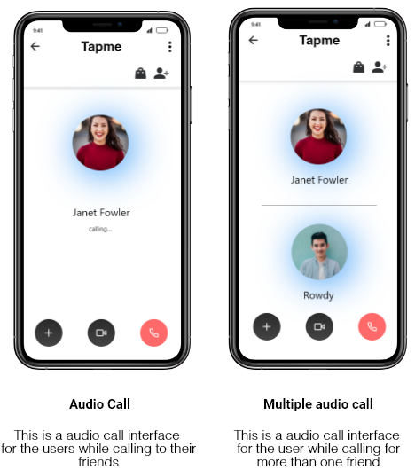
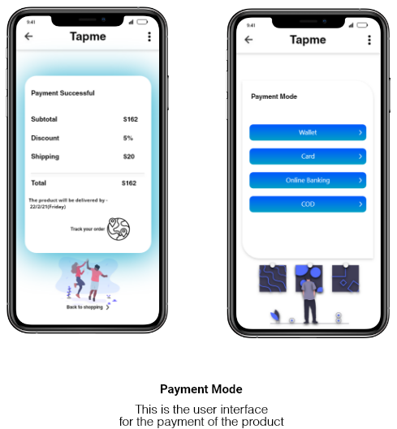

Tapme
AN ECOMMERCE APP WHICH SAYS "SHOP ONLINE TOGETHER EVEN MILES APART"

About project :
The duration of the project was one month. I chose to work onenhancing the experience of online shopping using eCommerce app. After acomprehensive study of the whole system and considering the possibleintervention points I came up with the concept “Tapme“.
The Brief:
Considering the stunted growth of the eCommerce online shopping, study the overall system of enhancing the customer experience while shopping online.
The process:
Initially, I started off with eCommerce research whichincluded what
are the common issues faced by users at the time of onlineshopping.
Basing on the research I have drawn down some features to make
theuser experience a comfortable one:
1) The user is given
accessto shop online with the friends even though they are apart.
The app willconnect them with a common interface to suggest items to
their friends. Thefriends will be connected in a voice call or video
call.
2) The user is given afeature of adding a 3d avatar of
their body for that-
i) at first, the face of the user is tracked and a 3d cartoon
figureis generated.
ii)the user is asked to fill the details of the measurements sothat
a 3d human resembling the user is created so that to give the
feature of“trial room” i.e. once the user click on try dress the
will generate a 3d human the character of the user so that he could
check how he going to look on thatdress.
3) The app is
integrated with a messenger so that the communitycan be developed
easily. The messenger includes:
i) Theuser can make a partial meeting with her friends for some time
while shoppingtogether so that they could chat while shopping, or
present in a group call.Once the meeting gets over all the chat
content can be destroyed.
ii) The app supports chatting, video calls, audio calls.
Businness research:
India’s rapid growth, across a range of frontiers, appears to be good news for global consumer businesses seeking to access its markets. Internet proliferation, as well as increasing uses of online shopping channels, pose new opportunities to reach consumers. A new PwC study highlights that more people are buying online, with debit cards the most common way to pay for online goods.
The Indian consumer goods market has seen steady growth in recent decades. The country has a relatively young and increasingly technology savvy population, with 40% of the recently breached 1.25 billion inhabitants aged between 25 and 54, 18% between 15 and 24, and 28% aged below 15. As GDP growth is projected to remain above 7% in the coming years, the country with its young population continues to represent an area of opportunity for businesses.
Reason for integrating messenger in the ecommerce app-
Messaging Goals:
• the number of Internet users increased by
100 million to a total of 560 million.
• 89% of Internet users use messaging apps like WhatsApp, Facebook
Messenger, Viber & Co.
• WhatsApp is at the top of mobile apps among monthly active users.
• Facebook Messenger was the most downloaded app in 2018.
Primarily, messaging. 91% of Indian internet users use mobile
messengers. This usage statistic actually ranks messaging apps as
more highly-used than YouTube: watching videos on mobile is the 2nd
place activity, followed by map services, playing games, and then
mobile banking.
“In the last years, the Indian mobile messaging audience grew by 113 per cent, we expect the number of mobile messaging users to continue to grow in the coming quarters,”
The report also revealed that the increasing popularity of messaging apps is driving users away from social networking sites such as Facebook. “Mobile messaging tools like WeChat and WhatsApp have seen substantial growth during recent period. Social networks are being treated more passively, meaning the number of people messaging friends on social networks has declined. People see mobile messaging apps as an efficient way to communicate,” explained GlobalWebIndex Head of Trends Jason Mander.
DataFlow

Signin and Registration
Interface
Home page and Profile page
Interface
Contact page and Chat list
Interface
Self Profile and Chat Theme
Interface
3D model Generation Interface
First the app will scan your face and create a 3d model just apparing like your face then it will ask you to customize the remaining measurements according to the customer like adding shoulder lngth etc.After the app will customize the dress that you have opted and it will dress the 3d model so that you can see your self and see weather it will suit you or not .The app is designed to give the feature of trying the dress without wearing them.
Audio call and Multiple audio call
Interface

Shopping and Shopping on call
Interface
Shop Module
Interface
Payment Interface

My Paper works